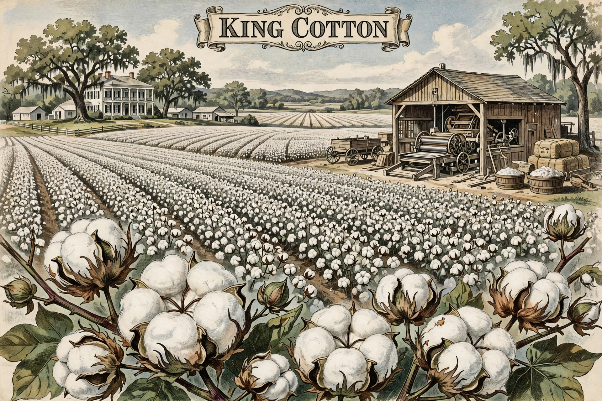

| King Cotton | |
|---|---|
 | |
| Region | Southern United States |
| Period | c. 1800–1865 (peak influence) |
King Cotton was a slogan expressing the Southern United States' belief, before and during the American Civil War, that cotton's dominance of the world textile economy gave the South decisive economic and diplomatic power.
After Eli Whitney's cotton gin (1793) made short-staple cotton profitable, cotton cultivation expanded across the Deep South on land worked by enslaved people. By 1860 the South supplied about two-thirds of the world's cotton and over half of US export value. Senator James Henry Hammond declared in 1858: "Cotton is king."
The Confederacy withheld cotton exports hoping to force Britain and France — whose mills depended on Southern cotton — to recognise and aid it. The strategy failed: stockpiles, alternative supplies from Egypt and India, Northern grain exports, and British opposition to slavery blunted the leverage, and the "cotton famine" hit Lancashire workers without changing policy.